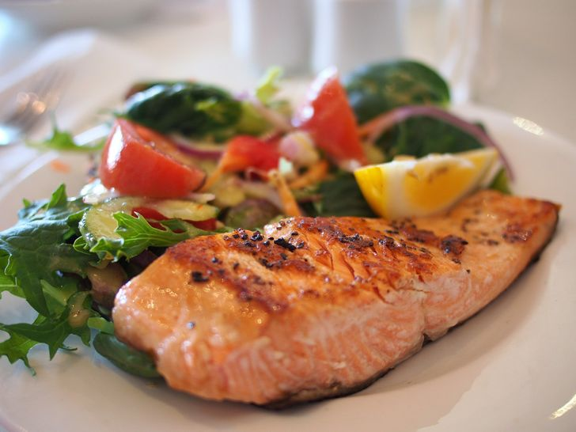

Salmon al horno
Ingredientes
- 500 g. de salmón
- 1 limón
- 1 cucharadita de eneldo
- 1 cucharadita de pimienta
- Alcaparras al gusto
Elaboracion
- Engrasar un fuente de horno y colocar el salmón con la piel hacia abajo.
- Salpimentar y añadir el eneldo y la ralladura del limón.
- Hornear a 180º C durante 15 minutos.
- Añadir las alcaparras antes de servir.
